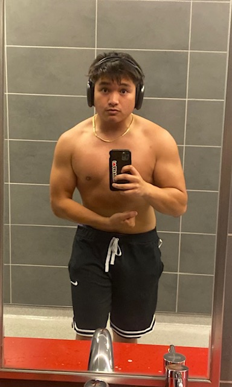

About Me
When I'm not working on coding projects, I like to spend time
on my other passions, whether from trying to get the highest rank
the highest rank in a game, aim training to sharpen my reflexes and stability
in game, and also pushing my limits with weightlifting. These hobbies
make me who I am, and what make me push myself everyday.
Aim Training

-
I've reached the rank Jade in Voltaic, which is a reputable community
of gamers who excell at aiming in games through aim training.
Gaming

-
I've also reached Ascendant 1 in the popular game Valorant by Riot Games
Rank Distribution
Weight Lifting
My Personal Records for Lifting

- Bench 245lbs
- Squat 315lbs
- Deadlift 405lbs